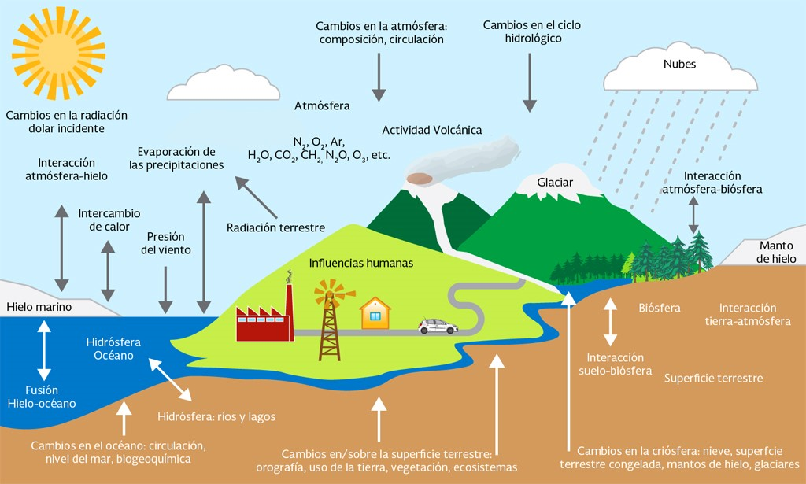

Cambio climatico
componentes
esta compuesta por gases de efecto invernadero y las actividades humanas que los producen.
La atmósfera :es la capa gaseosa que envuelve a la Tierra. Está compuesta en un 78 por ciento de nitrógeno y en un 21 por ciento de oxígeno. El 1 por ciento restante tiene otros componentes como vapor de agua, dióxido de carbono (CO2), ozono (O3), metano (CH4), óxido nitroso (N2O) y carbono negro, comúnmente conocidos como gases y compuestos de efecto invernadero.
La hidrósfera: es el conjunto de todos los cuerpos de agua del planeta. Se pueden encontrar debajo o sobre la superficie. Tres cuartas partes del agua existente se encuentran en los océanos y los mares.
La litósfera: es la capa exterior rígida y rocosa de la Tierra que consiste en la corteza y la
capa más externa sólida del manto superior.
La biósfera: es la capa de la Tierra (la superficie terrestre y los océanos) en donde se desarrolla la vida.
Gases de Efecto invierno: metano,dioxido de carbono,oxido nitroso,hidrofluorocarburos,perfluorocarburos,etc.
actividades humanas: tala de bosques,uso del transporte,energia en los edificios,generacion de electricidad y calor a partir de combustibles fosiles etc.

| ant | menu | sig |
|---|